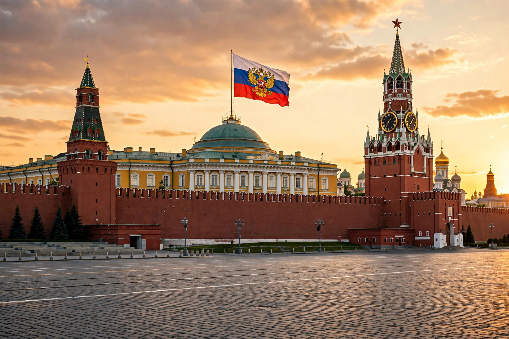

| President of the Russian Federation Президент Российской Федерации | |
| Incumbent | Vladimir Putin (since 7 May 2012) |
|---|---|
| Term length | 6 years, renewable once consecutively |
| Residence | Grand Kremlin Palace / Senate Palace, Moscow; Novo-Ogaryovo |
| First holder | Boris Yeltsin (1991) |
The President of the Russian Federation (Russian: Президент Российской Федерации) is the head of state of Russia, the guarantor of the Constitution, and the supreme commander-in-chief of the Russian Armed Forces. The office, created in 1991 and reshaped by the Constitution of 1993, is the highest in the Russian political system and wields wide executive authority, although the President is formally outside the three branches of government described in the Constitution.
The President is elected by universal direct suffrage in a two-round system for a term of six years (four years before a constitutional amendment adopted in 2008, effective from 2012). A candidate must be at least 35 years old, have permanently resided in Russia for at least 25 years, and hold no foreign citizenship. No person may serve more than two terms; the amendments of 2020 disregarded terms served before their entry into force for the incumbents then affected.
The President determines the basic guidelines of domestic and foreign policy, appoints the Prime Minister with the consent of the State Duma, chairs meetings of the Government, and may dismiss it. He signs and promulgates federal laws and holds a suspensive veto, overridable by two-thirds majorities in both chambers of the Federal Assembly. The President issues decrees and orders, grants pardons, appoints senior military commanders and diplomats, and may call referendums and elections. In defined circumstances — for example, if the Duma rejects a Prime Ministerial candidate three times — the President may dissolve the Duma.
Boris Yeltsin, the first President, served from 1991 until his resignation on 31 December 1999. Vladimir Putin served two terms from 2000 to 2008 and returned to the presidency in 2012 after Dmitry Medvedev's single term (2008–2012), during which Putin was Prime Minister. Putin was re-elected in 2018 and again in 2024 for a term running to 2030.